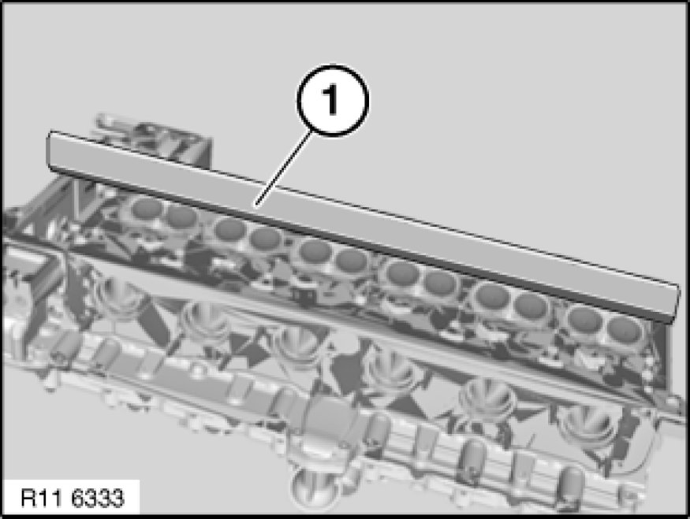
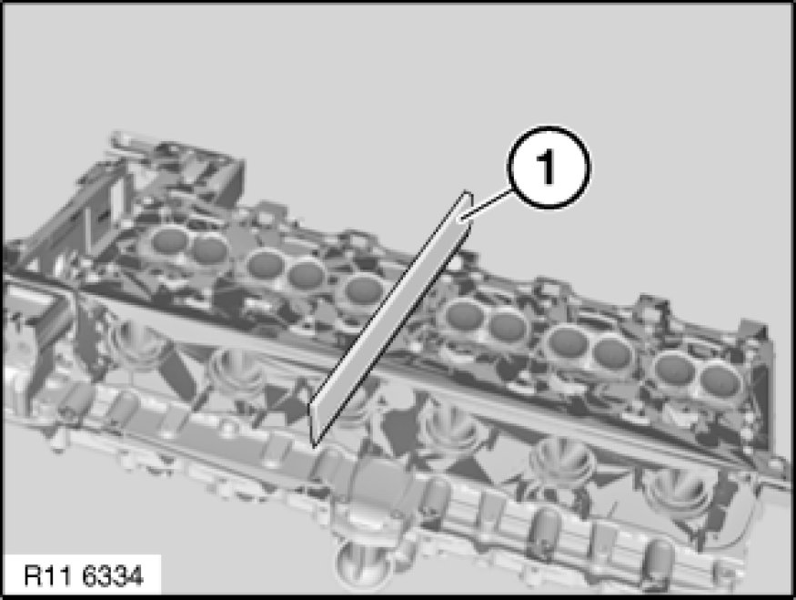

Procedures
11 12 719 - Resurfacing cylinder head sealing face (N52K)

Necessary preliminary tasks:
- Remove cylinder head Removal and Replacement
- Remove exhaust camshaft Removing and Installing/Replacing Exhaust Camshaft.
- Remove intermediate lever Removing and Installing/Replacing Intermediate Levers (N52K) on inlet side

Check evenness of cylinder head sealing faces with a standard straight-edge (1).
Note:
Max. deviation from level (longitudinal) 0.10 mm

Check evenness of cylinder head sealing faces with a standard straight-edge (1).
Note:
Max. deviation from level (transversal) 0.05 mm

Check cylinder head for water leaks Testing and Inspection.
Assemble engine.